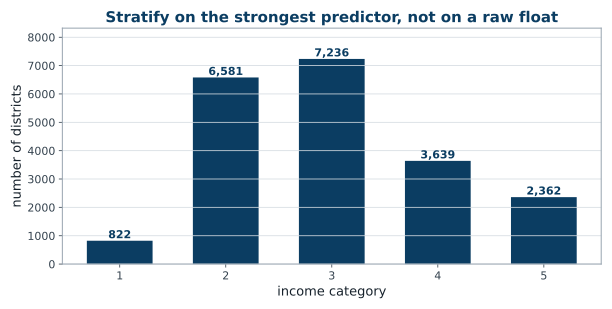
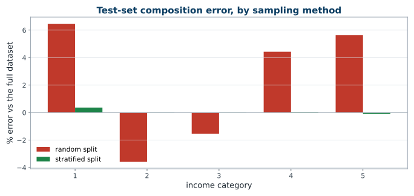
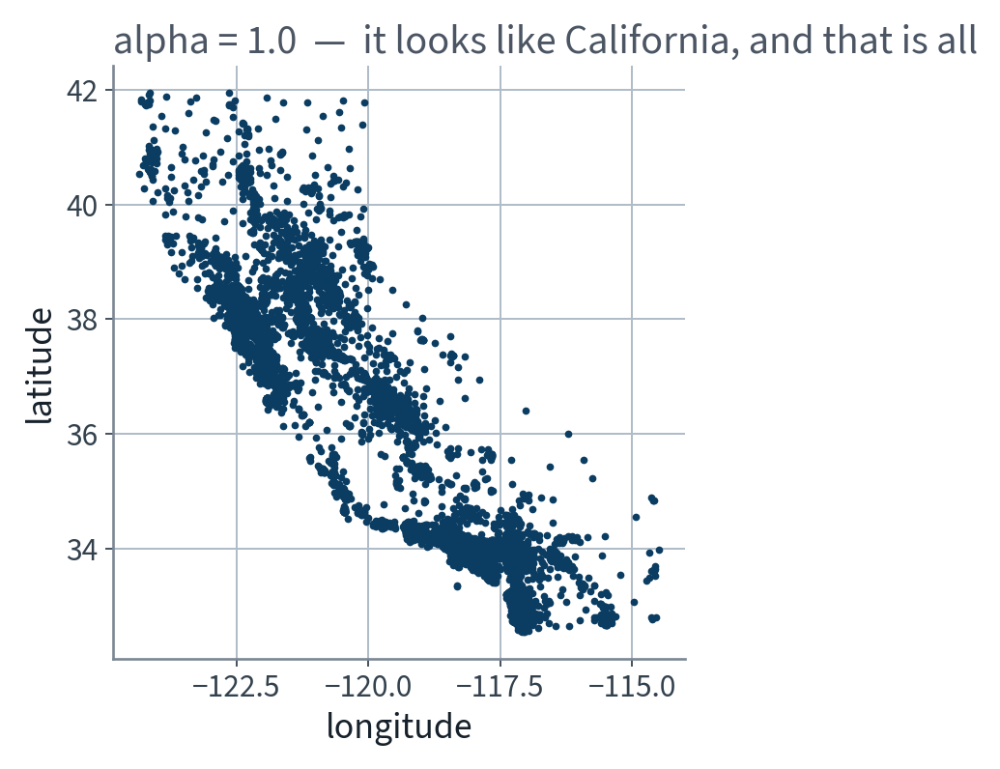
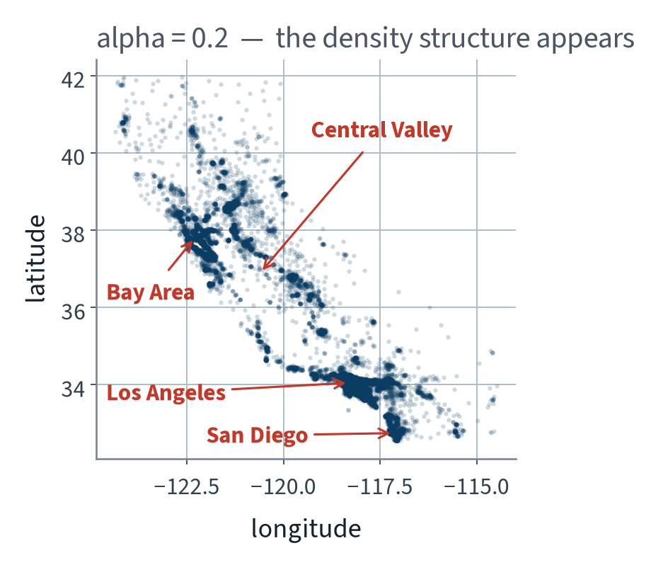
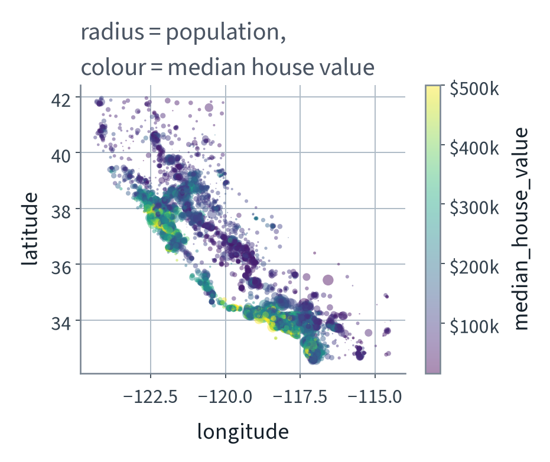
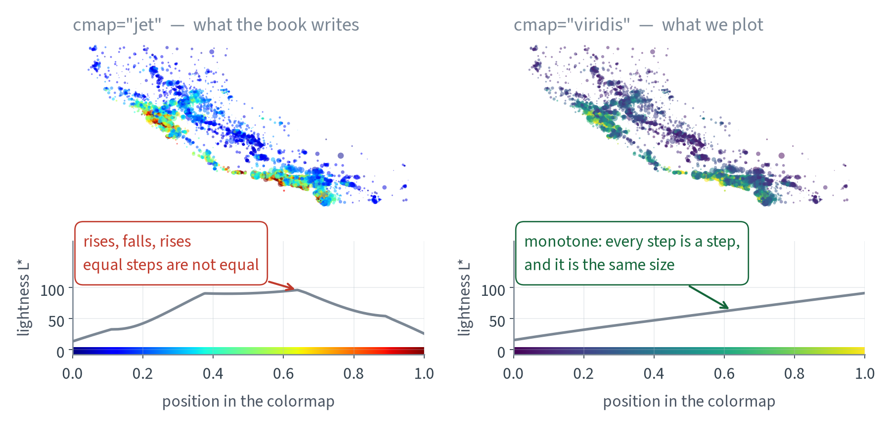
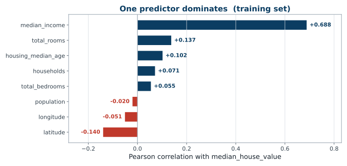
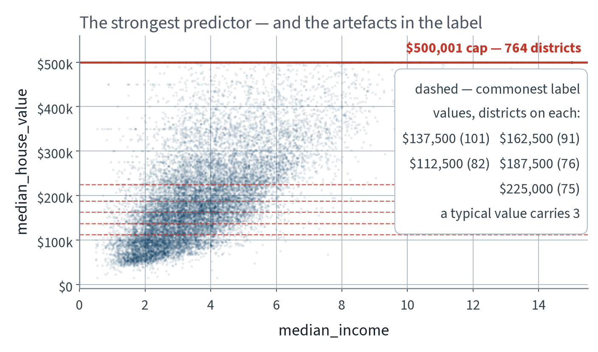

California housing
Lecture 2 Géron Ch. 2
Applications of Machine Learning
BSc Mathematics of Artificial Intelligence · Third year
Last lecture we framed the brief and looked at the whole dataset once. Everything you need from that, in one table:
| What we found | Why it matters today |
|---|---|
| The output is consumed as a price | supervised regression: one number per district, error in dollars |
207 missing values in total_bedrooms; ocean_proximity is categorical, one level with n=5 | both must be handled before anything is fitted |
| A target capped at $500,000 | 4.8% of districts carry a label that is not the answer |
| Scales four orders of magnitude apart, many columns skewed right | matters for some methods; not for the least squares we derive today |
| Nothing split yet | so the split comes first, before we look any closer |
We stopped at exactly the moment to stop: four histograms in, before plotting one variable against another. Today starts there.
Measured on one run of this lecture’s notebook; hardware, library versions and random seeds can make a re-run differ slightly.
By the end you will have a sealed test set, a training set you have looked at properly, and the objective a linear model minimises — with a proof that it has no false minima.
Part one
set the test set aside, then measure the split
Create the test set before you explore any further.
Animation
from sklearn.model_selection import train_test_split
train_set, test_set = train_test_split(housing_full, test_size=0.2,
random_state=42)
Purely random sampling is fine if the dataset is large enough relative to the number of attributes.
Ours may not be. Random sampling risks significant sampling bias.
Surveyors do not call 1,000 people at random. They ensure the sample is representative of the population on the dimensions that matter.
Experts tell us median income predicts price. So our test set must be representative across income levels.
import numpy as np
housing_full["income_cat"] = pd.cut(housing_full["median_income"],
bins=[0., 1.5, 3.0, 4.5, 6., np.inf],
labels=[1, 2, 3, 4, 5])

The bins are chosen so that no stratum is too small to sample from. Category 1 has 822 districts — enough.
Measured on one run of this lecture’s notebook; hardware, library versions and random seeds can make a re-run differ slightly.
strat_train_set, strat_test_set = train_test_split(
housing_full, test_size=0.2,
stratify=housing_full["income_cat"], random_state=42)
for set_ in (strat_train_set, strat_test_set):
set_.drop("income_cat", axis=1, inplace=True)
The stratified test set has income proportions almost identical to the full dataset. The purely random one is visibly skewed.
Not too many strata, and each stratum large enough — or the estimate of a stratum’s importance is itself biased.
Animation
Random split: up to 6.4% off. Stratified: up to 0.36% off. Roughly eighteen times better, for one keyword argument.
assert len(strat_train_set) + len(strat_test_set) == 20640
assert set(strat_train_set.columns) == set(strat_test_set.columns)
assert strat_train_set.index.intersection(strat_test_set.index).empty
Three lines: nothing was dropped, the two frames have the same columns, and no district is in both. Each one has been a real bug in a real notebook.
Part two
look properly — on the training set, and only that
housing = strat_train_set.copy() # 16,512 districts. The other 4,128
# are sealed until the final
# evaluation.
Everything from here to the end of this part is computed on
housing. Every correlation, every scatter, every ratio.
strat_train_set by accident. And
so that the numbers on the next eight slides are honestly labelled: they are
training-set numbers, and they will differ slightly from
anything you compute on all 20,640 rows.
Measured on one run of this lecture’s notebook; hardware, library versions and random seeds can make a re-run differ slightly.
housing.plot(kind="scatter", x="longitude", y="latitude", grid=True)
plt.show()
It looks like California. Beyond that, nothing is visible.

California. And nothing else — the ink is saturated.
housing.plot(kind="scatter", x="longitude", y="latitude",
grid=True, alpha=0.2)
plt.show()
Now the high-density areas appear: the Bay Area, Los Angeles, San Diego, and the Central Valley around Sacramento and Fresno.
Our brains are excellent at spotting patterns in pictures. Expect to tune plotting parameters until the pattern shows.

One keyword argument. Same data, and now you can see the population of a state.
housing.plot(kind="scatter", x="longitude", y="latitude", grid=True,
s=housing["population"] / 100, label="population",
c="median_house_value", cmap="jet", colorbar=True,
legend=True, sharex=False, figsize=(10, 7))
plt.show()
Radius encodes population, colour encodes price.
Prices are strongly related to location and population density. A clustering algorithm should be useful here — we will come back to that idea.
One line in that cell is worth arguing with, and we will — in the next slide but one.

Red on the coast, blue inland. The model does not know what “coast” means — but it will learn longitude.

cmap="jet" ran, produced something
colourful, and is wrong.
A colour scale is a claim that equal steps in the data look like equal steps on the screen. The bottom row of that figure is that claim, tested: it plots each colormap’s lightness against position.
| Colormap | Lightness range | Largest reversal | Verdict |
|---|---|---|---|
jet | 83.0 | 1.06 | rises, falls, rises |
turbo | 78.9 | 0.87 | better, still not monotone |
viridis | 75.9 | 0.00 | every step is a step |
So jet invents bands the data does not have,
buries detail in its yellow, and for the 8% of men with a red–green
deficiency it reverses rank order outright. Photocopy it and it stops being a
scale at all.
Measured on one run of this lecture’s notebook; hardware, library versions and random seeds can make a re-run differ slightly.
jet is matplotlib’s default from an older era, and it invents boundaries the data does not have. It took a measurement to see — the same map redrawn on a perceptually uniform scale. A default is a decision somebody made, not the absence of one.
>>> corr_matrix = housing.corr(numeric_only=True)
>>> corr_matrix["median_house_value"].sort_values(ascending=False)
median_house_value 1.000000
median_income 0.688380
total_rooms 0.137455
housing_median_age 0.102175
households 0.071426
total_bedrooms 0.054635
population -0.020153
longitude -0.050859
latitude -0.139584
Pearson’s $r$ ranges from $-1$ to $+1$. Income dominates.
These are training-set values. Compute them on all 20,640 rows and the third decimal moves — which is why a number is worth nothing without the set it was measured on.
Measured on one run of this lecture’s notebook; hardware, library versions and random seeds can make a re-run differ slightly.

One bar is five times the next. That is the feature we already stratified on — on the experts’ word, before we had looked. The measurement says they were right.
$r$ measures linear correlation only.
housing.plot(kind="scatter", x="median_income", y="median_house_value",
alpha=0.1, grid=True)
plt.show()
A horizontal stripe means many districts share one exact price. That is a property of the table, not of California, so it is countable.
Measured on one run of this lecture’s notebook; hardware, library versions and random seeds can make a re-run differ slightly.

The trend is real. The stripes are not: every one sits on a multiple of $12,500.
Measured on one run of this lecture’s notebook; hardware, library versions and random seeds can make a re-run differ slightly.
A well-known description of this dataset names three fainter lines. We counted them in our own training split.
| Value | Districts | Verdict |
|---|---|---|
| $350,000 | 62 | real — 21× the background |
| $450,000 | 31 | marginal |
| $280,000 | 3 | indistinguishable from background |
A typical price is shared by 3 districts, so the last one is not a line at all. Meanwhile the five commonest values below the cap — $137,500, $162,500, $112,500, $187,500, $225,000 — go unmentioned, and they are the strongest stripes in the plot.
Measured on one run of this lecture’s notebook; hardware, library versions and random seeds can make a re-run differ slightly.
housing["rooms_per_house"] = housing["total_rooms"] / housing["households"]
housing["bedrooms_ratio"] = housing["total_bedrooms"] / housing["total_rooms"]
housing["people_per_house"] = housing["population"] / housing["households"]
| Attribute | Correlation with price |
|---|---|
| median_income | 0.688 |
| rooms_per_house | 0.144 |
| total_rooms | 0.137 |
| bedrooms_ratio | −0.256 |
bedrooms_ratio is far more informative than
either raw count.
Measured on one run of this lecture’s notebook; hardware, library versions and random seeds can make a re-run differ slightly.
Collinearity causes real problems for some models — linear regression above all.
We will see exactly why when we derive the normal equation — a derivation this lecture starts, and the next one finishes.
The mathematics
Géron §4.1, brought forward — before we fit a linear model, we should know what fitting one does
examinable
You called LinearRegression().fit().
What did it actually compute — and when does that computation fail?
A weighted sum of the input features, plus a constant called the bias or intercept term.
where $\mathbf{x}$ contains $x_0$ through $x_n$ with $x_0 \equiv 1$, so the dot product reproduces the bias term.
Training the model means setting $\boldsymbol\theta$ so the model best fits the training set. To do that we need a measure of how badly it fits.
Mean squared error of a linear hypothesis
The root mean squared error is the square root of the MSE, $\mathrm{RMSE} = \sqrt{\mathrm{MSE}}$. It is in the units of the target — dollars here — which is why it is the number this course reports. We minimise the MSE instead, because $\sqrt{\cdot}$ is strictly increasing on $[0,\infty)$:
Same minimiser, simpler algebra.
Stack the instances as rows of $\mathbf{X}$ and the labels into $y$:
We are minimising a squared Euclidean norm. That is a geometric statement, and it is the whole content of this thread.
Setting the gradient to zero at the minimiser $\hat{\boldsymbol\theta}$:
A stationary point. Is it a minimum?
The Hessian of the MSE is
For any vector $\mathbf{v}$, $\;\mathbf{v}^{\intercal}\mathbf{X}^{\intercal}\mathbf{X}\mathbf{v} = \lVert \mathbf{X}\mathbf{v}\rVert_2^2 \ge 0$, so the Hessian is positive semi-definite and the MSE is convex.
A convex function has no local minima — only a global one. Any stationary point is it.
This is also why gradient descent, in Lecture 4, is guaranteed to reach this minimum.
pd.cut — and see what happens to the sampling
bias table. Two lines, and it is the whole argument of the stratification
section.
alpha,
and a default colour scale whose lightness runs backwardsbedrooms_ratio, beat both
— and weighted sums of existing columns are to be avoidedMeasured on one run of this lecture’s notebook; hardware, library versions and random seeds can make a re-run differ slightly.
We know what any solution of this is: the minimum of the MSE, because the MSE is convex. We have not yet solved it.
All three are answered by solving for $\hat{\boldsymbol\theta}$. That is where the next lecture starts.
Not presented — for afterwards
five, in the style of the written paper
longitude has a correlation of $r = -0.05$ with the median house value. A colleague concludes that location does not affect price, and drops the column. State the flaw in one sentence, and name the plot from this lecture that refutes it. [3]Solutions on Lecture 3’s deck.
Solutions on Lecture 3’s deck.
The five set at the end of Lecture 1
not part of this lecture
1. The brief says the output feeds a downstream system that expects a price. Name the one thing this fact…
It settles that this is supervised regression, not classification. It leaves the metric open.
2. info() reports that 207 of the 20,640 districts have no value for total_bedrooms. Give the three legitimate…
Drop those districts, drop the whole attribute, or fill the gaps. Filling leaves a decision: the value to fill with.
Measured on one run of this lecture’s notebook; hardware, library versions and random seeds can make a re-run differ slightly.
3. total_rooms runs from single digits to tens of thousands, median_income from about 0.5 to 15. Name two…
It matters for gradient descent and $k$-nearest neighbours; it does not for decision trees and ordinary least squares. A tree splits on one feature at a time, so any monotone rescaling gives the same tree.
4. The median income column is capped at 15. Give one consequence for the model and one for the evaluation, and…
Model: it can never learn what happens above the cap. Evaluation: the test set is capped too, so the error is silent about exactly those districts.
5. A model’s error is low on its training set and high on new districts. Name the condition, and explain…
Overfitting. The training error is measured on cases the model has already seen; the generalisation error is defined on cases it has not.
Next lecture
Solving $\mathbf{X}^{\intercal}\mathbf{X}\hat{\boldsymbol\theta} = \mathbf{X}^{\intercal}y$
in closed form, and reading it as a projection
When $\mathbf{X}^{\intercal}\mathbf{X}$ is not invertible — collinear
features, too few instances — and the pseudoinverse
Run the Lecture 2 notebook first